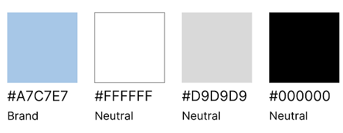
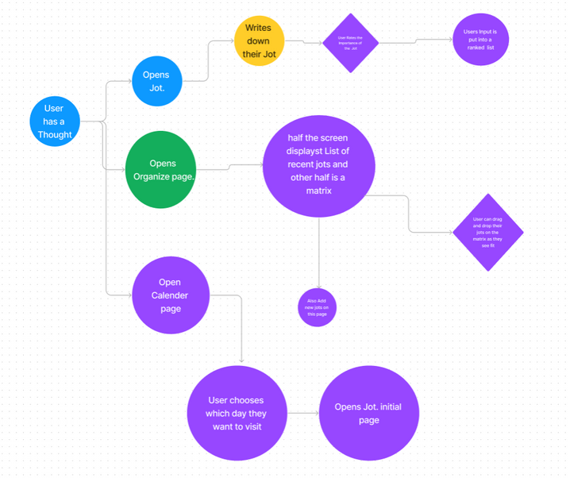
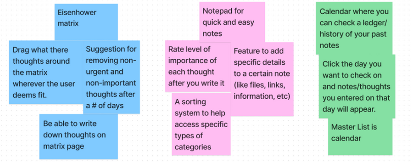
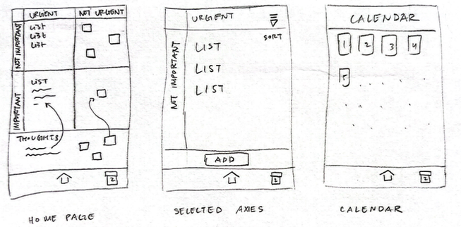
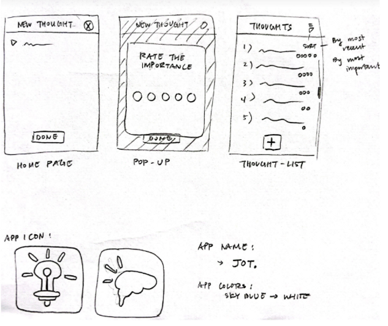
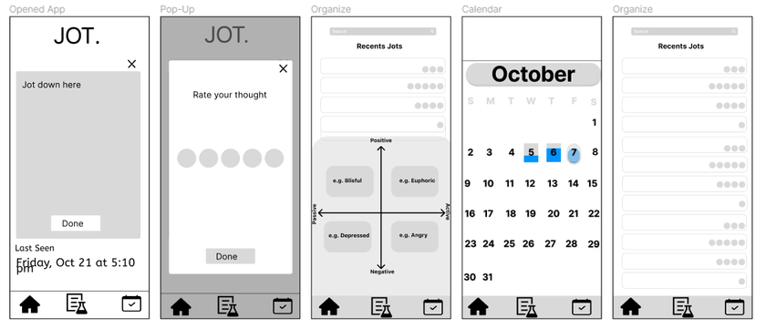

jot.
A simple tool to jot down your thoughts


Overview
Challenge
- Rice Design-a-thon:
Making changes to improve one's health lead to benefits for their body, mind, and even the environment. Design a mobile or web application that encourages practices of a healthy lifestyle.
Timeline
- October 21 - 23, 2022
Goals:
- Reduce overthinking and overstimulation when users have thoughts throughout the day
- Develop an intuitive user flow that prioritizes efficiency in note creations
- Encourages habitual organized thinking through the usage of matrix methods
My Contributions:
- User personas
- Design development
- Prototyping
Team
- Hao Luong
- Verenice Prado
- Khadija Hassan
- Sharoz Javaid
Design Process
Empathy Research
Brainstorm
For our app, we wanted to focus on the area of mental health, specifically exploring the topic of neurodivergence. Through the use of different matrix methods and prioritizing efficiency in note creations. Our design helps process and rationalize emotions, clear the mind, and keep records from the past.
We focused on articles that discussed ADHD and other kinds of neurodivergence to supplement our design:
- “An Introduction to Inclusive Design” by Mike Harris --> to consider different approaches and perspectives that will allow for a better design
- “How to design visual learning resources for neurodiverse students” by FullFabric --> to add to our visual design knowledge
- “Building Apps for a Neurodiverse Audience” by Codigodelsur --> to enhance our visual design implementation
Competitor Analysis
 Priority Matrix Eisenhower App
Priority Matrix Eisenhower App Dwight - ToDo Priority Matrix
Dwight - ToDo Priority Matrix Apple Notes
Apple Notes Google Tasks
Google TasksWe also researched various of information logging apps that focus on note-taking, reminders, and task management. Consequently, we can distinguish the pros and cons between each apps and redirect potential implementations to our own app and goals. Here are some features we liked and avoided.
Pros
- Quick access to main functionality
- Versatile customizability and Eisenhower matrix categorization
- Cross platform compatibility
Cons
- Limited to strictly one functionality
- Confusing presentation of Eisenhower matrix
- Outdated UI
Define
User Persona
"Hi there! My name is Sierra Ariz. I am 21 years old and is a full time student."
Pain-points
- Forgetting assignments, tasks, and scheduled events
- Inconsistent daily routines
- Overwhelming by overthinking and anxiety about forgetting important information
Needs
- Organize thoughts
- Create healthier daily routines
- Lessen mental load to reduce overwhelming feeling
Goals
- Make more commitments
- Enjoy the company of others without worry
Ideate
Design
Based on the existing note/reminder apps we examined, the features want in Jot. are a visualized rating system that allows thoughts to be categorized based on importance and a calendar system for ease of tracking the notes.
Typography
Our research articles suggested a clean font that can help users with dyslexia and offer a clean appearance. Therefore, we decided to use a Sans Serif font and SF Pro for their simplicity and easy to read format. Our main goal for the user experience was to create simple and straightforward navigation.


Color Palette
User Flow
Task Flow
Lo-Fi Sketches
Here are some designs we created during the beginning stages of our prototyping:
 Lo-Fi Wireframe

PROTOTYPING
After determining which wireframes would be the most ideal, we created a high fidelity prototype. My main work focused on developing the inputting process of the user's jot when they first opened the app, which was also an idea that I proposed, and creating the different list of jots. A highlight of my contribution was the name and branding behind our product. I came up with the name Jot. from the commonly used phrase of "jot this down". Moreover, because of the limited time span and we were a small team, we were also responsible for each other's division of work lending a helping hand whenever possible.
TEST
Peer Evaluation
After the RICE Designathon was finalized, we had our peers test our app design and asked them for constructive feedbacks. Here are some feedbacks that were brought up and took into consideration when implementing my final design.
"Make sure the hierarchy/sizing of things is more consistent with regular UI standards, such as designing items that are large enough for users to comfortably view especially on mobile. When viewing the matrix screens on my phone, the text in the matrix looks really small. For better usability, maybe give the user two viewing options: to organize their jots in a matrix or have them stacked for better readability." - Megan
"Make sure you emphasize the most important info. 'Last seen' looks really big compared to all the elements on the page, but is that the primary focus of the page? Same with the text below it. Generally speaking, the biggest text goes at the top of the page & works its way down as smaller text (aka body text). Try looking at other apps that do similar things & observe the text hierarchy." - James
"Think about whether or not that search bar serves a purpose in each of your pages — right now, it seems slightly unnecessary that you have it in all your pages, especially for pages with just 6 main touch points that aren’t hard to look into. Global search is great, but it might obstruct the usability of your app when it takes up unnecessary space. Another alternative is to use only the search icon (magnifying glass) in the corner of the page in pages where search is a little less of a priority" - Katelynn
"In the bottom navigation bars, you have your home page as the pressed state (aka filled icon), but you’re not always in the home — some pages show that you’re on the calendar page, so I would make sure to remember to change those pressed/unpressed (active/inactive) button states!! An easy fix would be just to fill in the calendar icon & unfill the home icon" - Fion